NCERT Solutions for Class 11 Physics Chapter 4 Motion in a plane are part of Class 11 Physics NCERT Solutions. Here we have given NCERT Solutions for Class 11 Physics Chapter 4 Motion in a plane.
NCERT Solutions for Class 11 Physics Chapter 4 Motion in a plane
Topics and Subtopics in NCERT Solutions for Class 11 Physics Chapter 4 Motion in a plane:
| Section Name | Topic Name |
| 4 | Motion in a plane |
| 4.1 | Introduction |
| 4.2 | Scalars and vectors |
| 4.3 | Multiplication of vectors by real numbers |
| 4.4 | Addition and subtraction of vectors – graphical method |
| 4.5 | Resolution of vectors |
| 4.6 | Vector addition – analytical method |
| 4.7 | Motion in a plane |
| 4.8 | Motion in a plane with constant acceleration |
| 4.9 | Relative velocity in two dimensions |
| 4.10 | Projectile motion |
| 4.11 | Uniform circular motion |
QUESTIONS FROM TEXTBOOK
Question 4. 1. State, for each of the following physical quantities, if it is a scalar or a vector: volume, mass, speed, acceleration, density, number of moles, velocity, angular frequency, displacement, angular velocity.
Answer: Scalars: Volume, mass, speed, density, number of moles, angular frequency.
Vectors: Acceleration, velocity, displacement, angular velocity.
Question 4. 2. Pick out the two scalar quantities in the following list:
force, angular momentum, work, current, linear momentum, electric field, average velocity, magnetic moment, relative velocity.
Answer: Work and current are the scalar quantities in the, given list.
More Resources for CBSE Class 11
- NCERT Solutions
- NCERT Solutions Class 11 Maths
- NCERT Solutions Class 11 Physics
- NCERT Solutions Class 11 Chemistry
- NCERT Solutions Class 11 Biology
- NCERT Solutions Class 11 Hindi
- NCERT Solutions Class 11 English
- NCERT Solutions Class 11 Business Studies
- NCERT Solutions Class 11 Accountancy
- NCERT Solutions Class 11 Psychology
- NCERT Solutions Class 11 Entrepreneurship
- NCERT Solutions Class 11 Indian Economic Development
- NCERT Solutions Class 11 Computer Science
Question 4. 3. Pick out the only vector quantity in the following list:
Temperature, pressure, impulse, time, power, total path length, energy, gravitational potential, coefficient of friction, charge.
Answer: Impulse.
Question 4. 4. State with reasons, whether the following algebraic operations with scalar and vector physical quantities are meaningful:
(a) adding any two scalars, (b) adding a scalar to a vector of the same dimensions, (c) multiplying any vector by any scalar, (d) multiplying any two scalars, (e) adding any two vectors, (f) adding a component of a vector to the same vector.
Answer: (a) No, because only the scalars of same dimensions can be added.
(b) No, because a scalar cannot be added to a vector.
(c) Yes, multiplying a vector with a scalar gives the scalar (number) times the vector quantity which makes sense and one gets a bigger vector. For example, when acceleration A is multiplied by mass m, we get a force F = ml
(d) Yes, two scalars multiplied yield a meaningful result, for example multiplication of rise in temperature of water and its mass gives the amount of heat absorbed by that mass of water.
(e) No, because the two vectors of same dimensions can be added.
(f) Yes, because both are vectors of the same dimensions.
Question 4.5. Read each statement below carefully and state with reasons, if it is true or false:
(a) The magnitude of a vector is always a scalar.
(b) Each component of a vector is always a scalar.
(c) The total path length is always equal to the magnitude of the displacement vector of a particle.
(d) The average speed of a particle (defined as total path length divided by the time taken to cover the path) is either greater or equal to the magnitude of average velocity of the particle over the same interval of time.
(e) Three vectors not lying in a plane can never add up to give a null vector.
Answer: (a) True, magnitude of the velocity of a body moving in a straight line may be equal to the speed of the body.
(b) False, each component of a vector is always a vector, not scalar.
(c) False, total path length can also be more than the magnitude of displacement vector of a particle.
(d) True, because the total path length is either greater than or equal to the magnitude of the displacement vector.
(e) True, this is because the resultant of two vectors will not lie in the plane of third vector and hence cannot cancel its effect to give null vector.
Question 4. 6. Establish the following inequalities geometrically or otherwise:
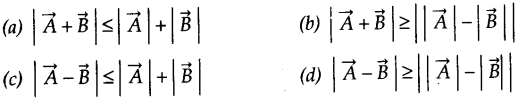
When does the equality sign above apply?
Answer:
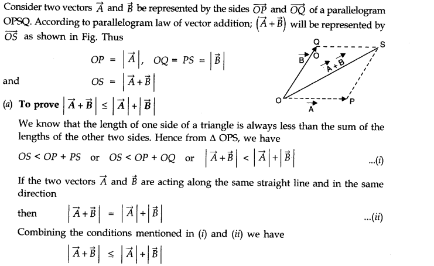
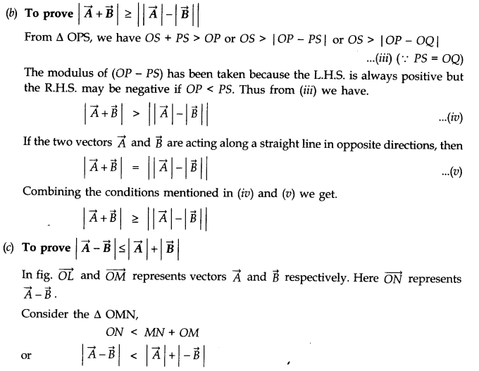
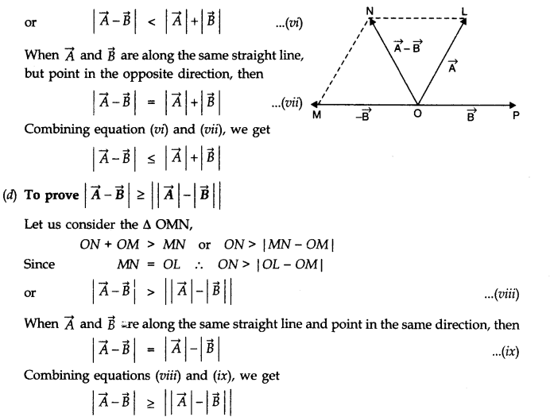
Question 4. 7.
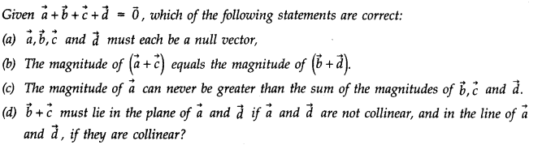
Answer:
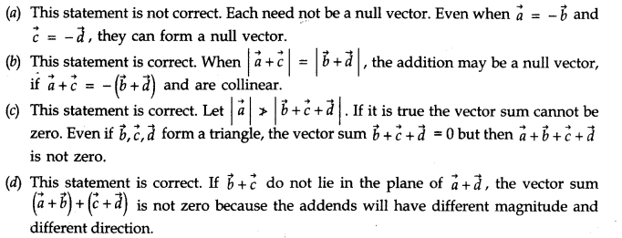
Question 4. 8. Three girls skating on a circular ice ground of radius 200 m start from a point P on the edge of the ground and reach a point Q diametrically opposite to P following different paths as shown in Fig. What is the magnitude of the displacement vector for each? For which girl is this equal to the actual length of path skate?

Answer:
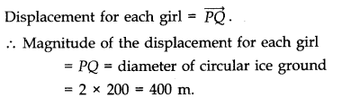
Question 4. 9. A cyclist starts from the centre O of a circular park of radius 1 km, reaches the edge P of the park, then cycles along the circumference, and returns to the centre along QO as shown in Fig. If the round trip takes 10 min, what is the (a) net displacement,
(b) average velocity, and (c) average speed of the cyclist?
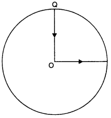
Answer: (a) Since both the initial and final positions are the same therefore the net displacement is zero.
(b) Average velocity is the ratio of net displacement and total time taken. Since the net displacement is zero therefore the average velocity is also zero.
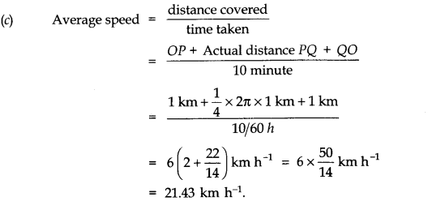
Question 4. 10. On an open ground, a motorist follows a track that turns to his left by an angle of 60° after every 500 m. Starting from a given turn, specify the displacement of the motorist at the third, sixth and eighth turn. Compare the magnitude of the displacement with the total path length covered by the motorist in each case.
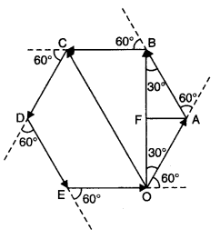
Answer: (i) The path followed by the motorist will be a closed hexagonal path.
Suppose the motorist starts his journey from the , point O. He takes the turn at point C.
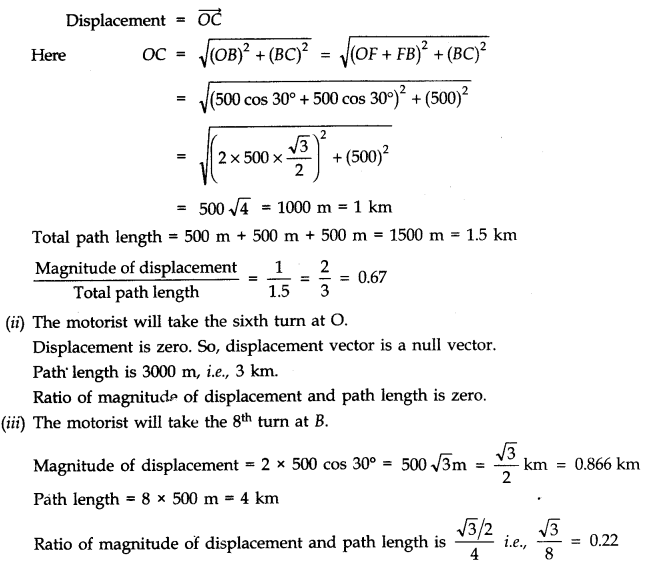
Question 4. 11.A passenger arriving in a new town wishes to go from the station to a hotel located 10 km away on a straight road from the station. A dishonest cab man takes him along a circuitous path 23 km long and reaches the hotel in 28 min. What is (a) the average speed of the taxi, (b) the magnitude of average velocity? Are the two equal?
Answer:
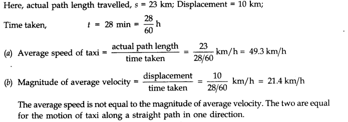
Question 4. 12. Rain is falling vertically with a speed of 30 m s-1. A woman rides a bicycle with a speed of 10 m s-1 in the north to south direction. What is the direction in which she should hold her umbrella ?
Answer:
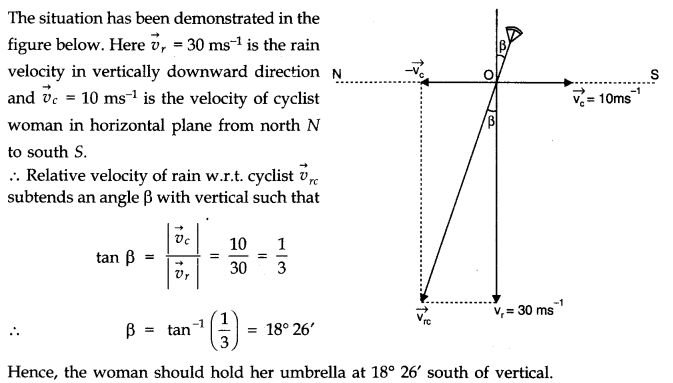
Question 4. 13. A man can swim with a speed of 4.0 km h-1 in still water. How long does he take to cross a river 1.0 km wide if the river flows steadily at 3.0 km h-1 and he makes his strokes normal to the river current? How far down the river does he go when he reaches the other bank?
Answer:
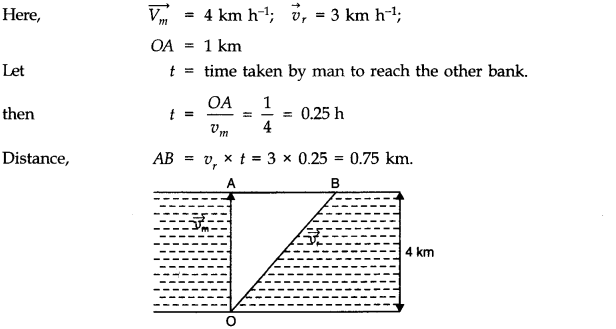
Question 4. 14. In a harbour, wind is blowing at the speed of 72 km/h and the flag on the mast of a boat anchored in the harbour flutters along the N-E direction. If the boat starts moving at a speed of 51 km/h to the north, what is the direction of the flag on the mast of the boat?
Answer: When the boat is anchored in the harbour, the flag flutters along the N-E direction. It shows that the velocity of wind is along the north-east direction. When the boat starts moving, the flag will flutter along the direction of relative velocity of wind w.r.t. boat. Let Vwb be the relative velocity of wind w.r.t. boat and P be the angle between Vwb and vw (see fig. below)
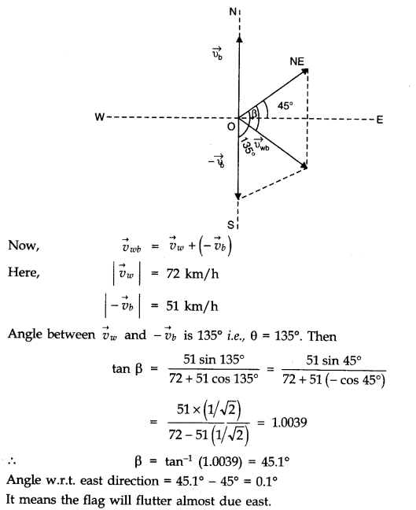
Question 4. 15. The ceiling of a long hall is 25 m high. What is the maximum horizontal distance that a ball thrown with a speed of 40 m s-1 can go without hitting the ceiling of the hall?
Answer:
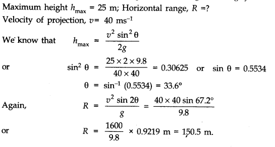
Question 4. 16. A cricketer can throw a ball to a maximum horizontal distance of 100 m. How much high above the ground can the cricketer throw the same ball?
Answer:
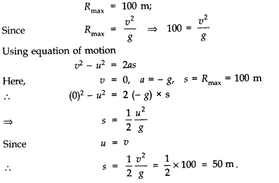
Question 4. 17. A stone tied to the end of a string 80 cm long is whirled in a horizontal circle with a constant speed. If the stone makes 14 revolutions in 25 s, what is the magnitude and direction of acceleration of the stone?
Answer:
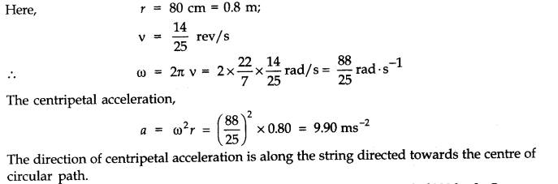
Question 4.18. An aircraft executes a horizontal loop of radius 1.00 km with a steady speed of 900 km/h. Compare its centripetal acceleration with the acceleration due to gravity.
Answer:
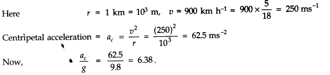
Question 4. 19. Read each statement below carefully and state, with reasons, if it is true or false:
(a) The net acceleration of a particle in circular motion is always along the radius of the circle towards the centre.
(b) The velocity vector of a particle at a point is always along the tangent to the path of the particle at that point.
(c) The acceleration vector of a particle in uniform circular motion averaged over one cycle is a null vector.
Answer: (a) False, the net acceleration of a particle in circular motion is along the radius of the circle towards the centre only in uniform circular motion.
(b) True, because while leaving the circular path, the particle moves tangentially to the circular path.
(c) True, the direction of acceleration vector in a uniform circular motion is directed towards the centre of circular path. It is constantly changing with time. The resultant of all these vectors will be a zero vector.
Question 4. 20. The position of a particle is given by
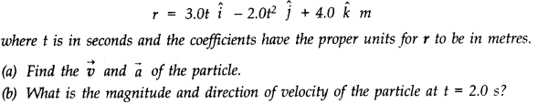
Answer:
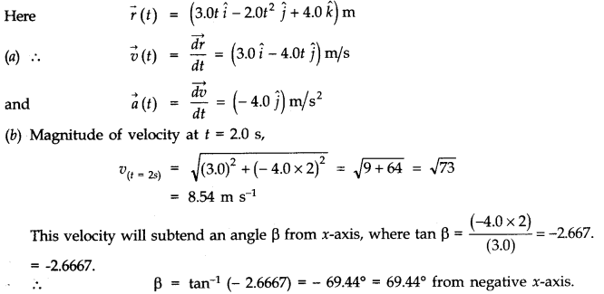
Question 4. 21.
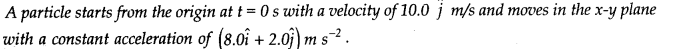
(a) At what time is the x-coordinate of the particle 16 m? What is the y-coordinate of the particle at that time?
(b) What is the speed of the particle at the time?
Answer:
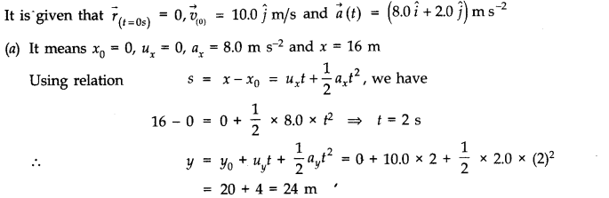
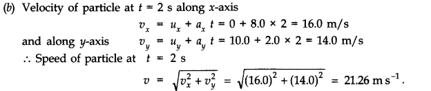
Question 4. 22.
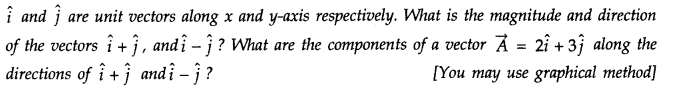
Answer:
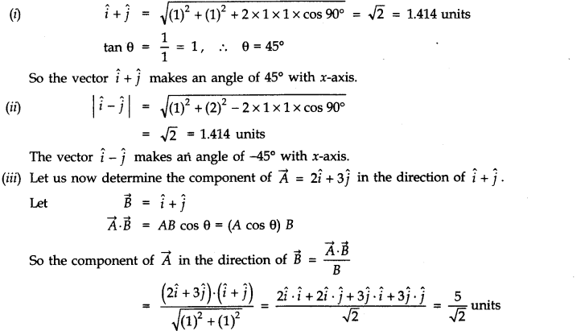
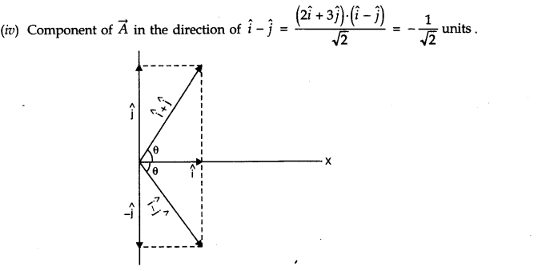
Question 4. 23. For any arbitrary motion in space, which of the following relations are true:
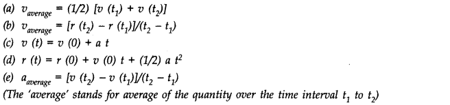
Answer: (b) and (e) are true; others are false because relations (a), (c) and (d) hold only for uniform acceleration.
Question 4. 24. Read each statement below carefully and state, with reasons and examples, if it is true or false: A scalar quantity is one that
(a) is conserved in a process
(b) can never take negative values
(c) must be dimensionless
(d) does not vary from one point to another in space
(e) has the same value for observers with different orientations of axes.
Answer: (a) False, because kinetic energy is a scalar but does not remain conserved in an inelastic collision.
(b) False, because potential energy in a gravitational field may have negative values.
(c) False, because mass, length, time, speed, work etc., all have dimensions.
(d) False, because speed, energy etc., vary from point to point in space.
(e) True, because a scalar quantity will have the same value for observers with different orientations of axes since a scalar has no direction of its own.
Question 4. 25. An aircraft is flying at a height of 3400 m above the ground. If the angle subtended at a ground observation point by the aircraft positions 10 s apart is 30°, what is the speed of the aircraft? Time taken by aircraft from A to B is 10 s.
Answer:
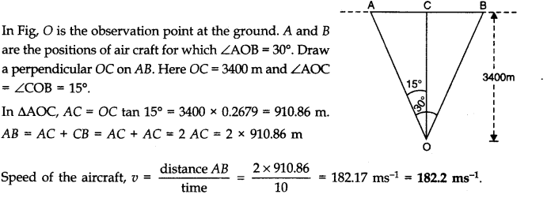
Question 4. 26. A vector has magnitude and direction.
(i) Does it have a location in the space?
(ii) Can it vary with time?
(iii) Will two equal vectors a and b at different locations in space necessarily have identical physical effects? Give examples in support of your answer.
Answer: (i) Besides having magnitude and direction, each vector has also a location in space.
(ii) A vector can vary with time. As an example, velocity and acceleration vectors may vary with time.
(iii) Two equal vectors a and b having different locations may not have same physical effect. As an example, two balls thrown with the same force, one from earth and the other from moon will attain different ‘maximum heights’.
Question 4. 27. A vector has both magnitude and direction. Does that mean anything that has magnitude and direction is necessarily a vector? The rotation of a body can be specified by the direction of the axis of rotation and the angle of rotation about the axis. Does that make any rotation a vector?
Answer: No. Finite rotation of a body about an axis is not a vector because finite rotations do not obey the laws of vector addition.
Question 4. 28. Can you associate vectors with (a) the length of a wire bent into a loop (b) a plane area (c) a sphere? Explain.
Answer: (a) We cannot associate a vector with the length of a wire bent into a loop. This is because the length of the loop does not have a definite direction.
(b) We can associate a vector with a plane area. Such a vector is called area vector and its direction is represented by a normal drawn outward to the area.
(c) The area of a sphere does not point in any difinite direction. However, we can associate a null vector with the area of the sphere. We cannot associate a vector with the volume of a sphere.
Question 4. 29. A bullet fired at an angle of 30° with the horizontal hits the ground 3 km away. By adjusting its angle of projection, can one hope to hit a target 5 km away? Assume the muzzle speed to the fixed, and neglect air resistance.
Answer:
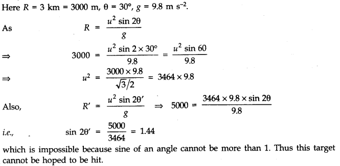
Question 4. 30. A fighter plane flying horizontally at an altitude of 1.5 km with speed 720 km h-1 passes directly overhead an anti-aircraft gun. At what angle from the vertical should the gun be fired for the shell with muzzle speed 600 m s-1 to hit the plane? At what minimum altitude should the pilot fly the plane to avoid being hit? (Take g = 10 m s-2)?
Answer: Velocity of plane, vp=720 x 5/180 ms-1=200 ms-1
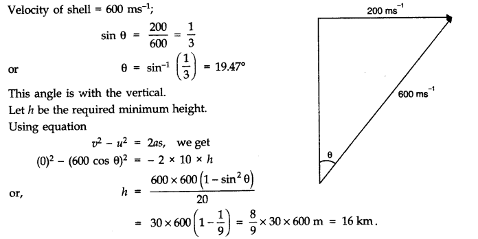
Question 4. 31. A cyclist is riding with a speed of 27 km/h. As he approaches a circular turn on the road of radius 80 m, he applies brakes and reduces his speed at the constant rate of 0.50 m/s every second. What is the magnitude and direction of the net acceleration of the cyclist on the circular turn?
Answer:
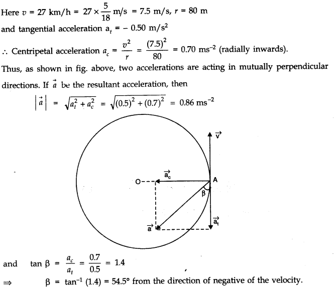
Question 4.32. (a) Show that for a projectile the angle between the velocity and the x-axis as a function of time is given by
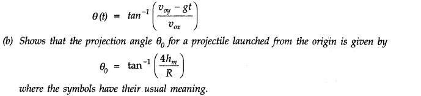
Answer:
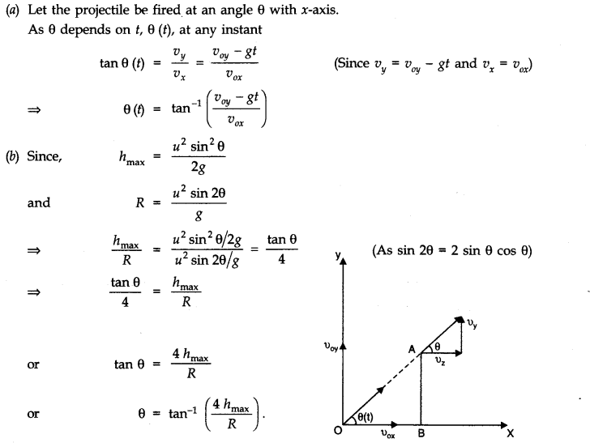
NCERT Solutions for Class 11 Physics All Chapters
- Chapter 1 Physical World
- Chapter 2 Units and Measurements
- Chapter 3 Motion in a Straight Line
- Chapter 4 Motion in a plane
- Chapter 5 Laws of motion
- Chapter 6 Work Energy and power
- Chapter 7 System of particles and Rotational Motion
- Chapter 8 Gravitation
- Chapter 9 Mechanical Properties Of Solids
- Chapter 10 Mechanical Properties Of Fluids
- Chapter 11 Thermal Properties of matter
- Chapter 12 Thermodynamics
- Chapter 13 Kinetic Theory
- Chapter 14 Oscillations
- Chapter 15 Waves
We hope the NCERT Solutions for Class 11 Physics Chapter 4 Motion in a plane help you. If you have any query regarding NCERT Solutions for Class 11 Physics Chapter 4 Motion in a plane, drop a comment below and we will get back to you at the earliest.